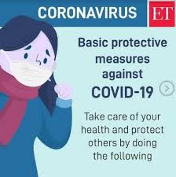
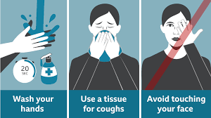
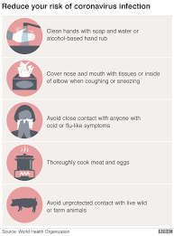
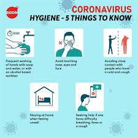

PRECAUTIONS FOR COVID-19
Coronavirus disease 2019 (COVID-19) is an infectious disease caused by severe acute respiratory syndrome coronavirus 2 (SARS-CoV-2).The disease was first identified in December 2019 in Wuhan, the capital of China's Hubei province, and has since spread globally, resulting in the ongoing 2019–20 coronavirus pandemic.
Common symptoms include fever, cough and shortness of breath.Other symptoms may include fatigue, muscle pain, diarrhoea, sore throat, loss of smell and abdominal pain.The time from exposure to onset of symptoms is typically around five days, but may range from two to fourteen days.
While the majority of cases result in mild symptoms, some progress to viral pneumonia and multi-organ failure.As of 12 April 2020, more than 1.78 million cases of COVID-19 have been reported in 210 countries and territories,resulting in more than 109,000 deaths.More than 405,000 people have recovered,although there may be a possibility of reinfection.
The virus is mainly spread between people during close contact,often via small droplets produced during coughing,sneezing, or talking.While these droplets are produced when breathing out, they usually fall to the ground or surfaces rather than being infectious over large distances.
People may also become infected by touching a contaminated surface and then their face.The virus can survive on surfaces for up to 72 hours.
It is most contagious during the first three days after onset of symptoms, although spread may be possible before symptoms appear and in later stages of the disease.
The standard method of diagnosis is by real-time reverse transcription polymerase chain reaction (rRT-PCR) from a nasopharyngeal swab. Chest CT imaging may also be helpful for diagnosis in individuals were there is a high suspicion of infection based on symptoms and risk factors but is not recommended for routine screening. Recommended measures to prevent infection include frequent hand washing, maintaining physical distance from others (especially from those with symptoms), covering coughs and sneezes with a tissue or inner elbow and keeping unwashed hands away from the face. The use of masks is recommended for those who suspect they have the virus and their caregivers.Recommendations for mask use by the general public vary, with some authorities recommending against their use, some recommending their use and others requiring their use. Currently, there is no vaccine or specific antiviral treatment for COVID-19.Management involves treatment of symptoms, supportive care, isolation and experimental measures. The World Health Organization (WHO) declared the 2019–20 coronavirus outbreak a Public Health Emergency of International Concern (PHEIC) on 30 January 2020 and a pandemic on 11 March 2020. Local transmission of the disease has been recorded in many countries across all six WHO regions.
Signs and symptoms:
Those infected with the virus may be asymptomatic or develop flu-like symptoms, including fever, cough, fatigue, and shortness of breath.Emergency symptoms include difficulty breathing, persistent chest pain or pressure, confusion, difficulty waking and bluish face or lips; immediate medical attention is advised if these symptoms are present. Less commonly, upper respiratory symptoms, such as sneezing, runny nose or sore throat may be seen. Symptoms such as nausea, vomiting and diarrhoea have been observed in varying percentages. Some cases in China initially presented only with chest tightness and palpitations.In March 2020 there were reports indicating that loss of the sense of smell (anosmia) may be a common symptom among those who have mild disease,although not as common as initially reported. In some, the disease may progress to pneumonia, multi-organ failure and death.In those who develop severe symptoms, time from symptom onset to needing mechanical ventilation is typically eight days.
As is common with infections, there is a delay between the moment when a person is infected with the virus and the time when they develop symptoms. This is called the incubation period. The incubation period for COVID-19 is typically five to six days but may range from two to 14 days. 97.5% of people who develop symptoms will do so within 11.5 days of infection.Reports indicate that not all who are infected develop symptoms, but their role in transmission is unknown. Preliminary evidence suggests asymptomatic cases may contribute to the spread of the disease.The proportion of infected people who do not display symptoms is currently unknown and being studied, with the Korea Centers for Disease Control and Prevention (KCDC) reporting that 20% of all confirmed cases remained asymptomatic during their hospital stay. China's National Health Commission began including asymptomatic cases in its daily cases on 1 April, of the 166 infections on that day, 130 (78%) were asymptomatic.
VIDEOS : |
||
SYMOTOMS AND PRECAUTIONS : |
||
 |
 |
 |
|  |  |  |